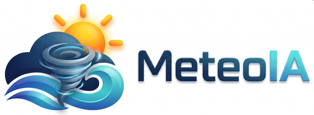

Trombas marinas
Perspectiva experimental a 72 h · zonas III a VI
–
GFS cada 6 h · ensamble GEFS 00 y 12 UTC
Pronósticos
Marítimos
B
Carta de
Superficie
7-8
Monitoreo
de Hielos
WRF
Pronósticos
WRF
Pronósticos
WRF + IA
Desarrollo
Trombas
STP ≤ −0,1
Alto cizalle, CAPE bajo
NST > 1
Trombas marinas
Avisos oficiales ↗
Felipe Rifo Espósito™